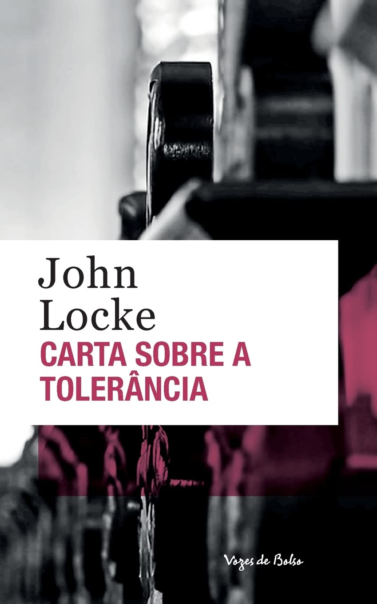
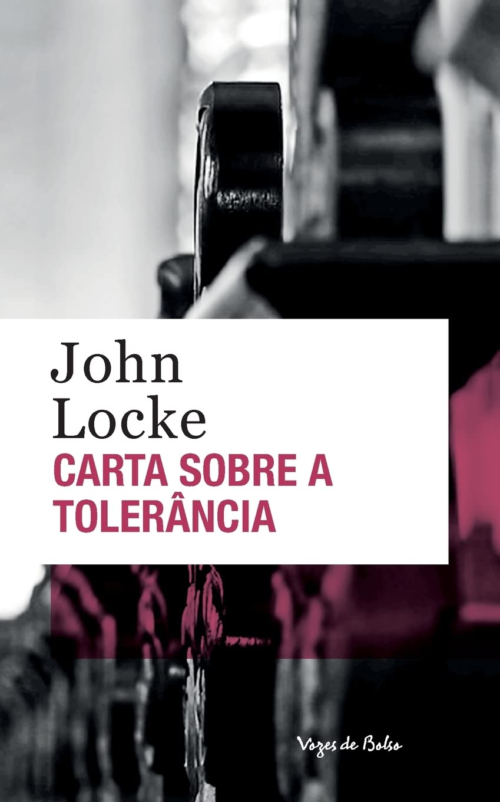

• Cartas sobre a tolerância (1689).
• Dois tratados sobre o governo (1689.)

• Ensino acerca do entendimento humano (1690).

• Pensamentos sobre a educação (1693).
⇨John Locke foi um filósofo inglês conhecido como o "pai do liberalismo", sendo considerado o principal representante do empirismo britânico e um dos principais teóricos do contrato social. Locke ficou conhecido como o fundador do empirismo, além de defender a liberdade e a tolerância religiosa. Como filósofo, pregou a teoria da tábula rasa, segundo a qual a mente humana era como uma folha em branco, que se preenchia apenas com a experiência. Essa teoria é uma crítica à doutrina das ideias inatas de Platão, segundo a qual princípios e noções são inerentes ao conhecimento humano e existem independentemente da experiência.
⇨Um dos objetivos de Locke é a reafirmação da necessidade do Estado e do contrato social e outras bases. Opondo-se a Hobbes, Locke acreditava que se tratando de Estado-natureza, os homens não vivem de forma bárbara ou primitiva. Para ele, há uma vida pacífica explicada pelo reconhecimento dos homens por serem livres e iguais. Locke estudou medicina, ciências naturais e filosofia em Oxford, principalmente as obras de Bacon e Descartes.Em 1683, refugiou-se nos Países Baixos ao ser acusado de traição junto ao seu mentor politico o lorde Shaftesbury, que era líder da oposição ao rei Carlos II no parlamento. Voltou à Inglaterra quando Guilherme de Orange subiu ao trono , em 1688. Em 1689-1690 publicou as suas primeiras obras: Carta Sobre a Tolerância, Ensaio Sobre o Entendimento Humano, e os Dois Tratados Sobre o Governo Civil.
⇨Faleceu em 28 de outubro de 1704, com 72 anos.Locke nunca se casou ou teve filhos. Encontra-se sepultado em All Saints Churchyard, High Laver, Essex na Inglaterra.
• Ler fornece ao espírito materiais para o conhecimento, mas só o pensar faz nosso o que lemos.
• Sempre considerei as ações dos homens como as melhores intérpretes dos seus pensamentos.
• A necessidade de procurar a verdadeira felicidade é o fundamento da nossa liberdade.
• As novas opiniões são sempre suspeitas e geralmente opostas, por nenhum outro motivo além do fato de ainda não serem comuns.
• O que te preocupa, te escraviza.
• Todos os homens são passíveis de errar; e a maior parte deles é, em muitos aspectos, por paixão ou interesse tentada a fazê-lo.
• É preciso metade do tempo para usar a outra.
• O prazer e a dor, e os que os produzem, o bem e o mal, são os eixos em que assentam todas as nossas paixões.
• Cartas sobre a tolerância (1689).
• Dois tratados sobre o governo (1689.)
• Ensino acerca do entendimento humano (1690).
• Pensamentos sobre a educação (1693).